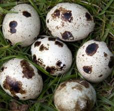
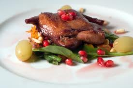

Domestication
Song Birds
The earliest records of domesticated Japanese quail populations are from 12th century Japan; however, there is evidence that the species was actually domesticated as early as the 11th century.[2][13] These birds were originally bred as songbirds, and it is thought that they were regularly used in song contests.[2][9]
Egg Production
In the early 1900s, Japanese breeders began to selectively breed for increased egg production. By 1940, the industry surrounding quail eggs was flourishing. Unfortunately, the events of World War II led to the complete loss of quail lines bred for their song type, as well as almost all of those bred for egg production. After the war, the few enduring quail left were used to rebuild the industry, and all current commercial and laboratory lines today are considered to have originated from this population of quail.[2][9]
Egg weight, color, shape, and size can vary greatly among different females of the Japanese quail population; however, these characteristics are quite specific and consistent for any one given female. Eggs are generally mottled with a background color ranging from white to blue to pale brown.[2] Depending on which strain of the Japanese quail one examines, eggs can weight anywhere from 8 to 13 grams, though the accepted average weight is 10 grams.[2][13] Age seems to play a role on the size of eggs produced as older females tend to lay larger eggs than their younger counterparts.[13]
Meat
As the Japanese quail is easily managed, fast growing, small in size, and can produce eggs at a high rate, the Japanese quail has been farmed in large quantities across the globe.[2][9]Countries such as Japan, India, China, Italy, Russia, and the United States all have established commercial Japanese quail farming industries.[2] This animal provides developing countries with a stable source of animal proteins and developed countries with a suitable alternative to chicken. However, this animal finds its true economic and commercial value in its egg production, as domesticated lines of the Japanese quail can lay up to 300 eggs a year at an incredibly efficient feed to egg conversion ration.[2]